Assemble ta toupie pièce par pièce, puis éjecte tes amis de l'arène.
- Genre
- Combat de toupies en arène
- Joueurs
- 1 à 4, en local
- Plateformes
- Windows (Steam)
- Démo gratuite
- 11 novembre 2026
- Sortie
- Mars 2027
Le jeu
BattleSpinners est un jeu de combat de toupies en pixel art, en vue de dessus. De deux à quatre joueurs assemblent une toupie à partir de cinq pièces, la lancent dans l'arène et s'affrontent jusqu'à ce qu'il n'en reste qu'une, en éjectant leurs rivales du stade ou en épuisant leur endurance.
Chaque pièce modifie les statistiques de la toupie, et deux d'entre elles donnent accès à des capacités spéciales : dash, trou noir, vol d'endurance… Un système de posture récompense la pression : faites perdre l'équilibre à une toupie et votre coup suivant devient critique. En solo, un mode arcade oppose le joueur à des bots avec une difficulté croissante. BattleSpinners est développé par un développeur solo à Toulouse et sortira sur Steam en mars 2027. Une démo gratuite, avec le mode histoire et Remote Play Together, est disponible sur Steam à partir du 11 novembre 2026.
Points clés
- Multijoueur local de 2 à 4 joueurs, en chacun pour soi ou en équipes ; jeu en ligne via Steam Remote Play Together.
- Cinq emplacements de pièces, 16 variantes chacun dans le jeu complet (8 dans la démo). Chaque pièce modifie l'Attaque, la Défense, l'Endurance, la Vitesse et le Poids.
- 32 capacités spéciales dans le jeu complet (16 dans la démo), deux par toupie, liées aux pièces équipées.
- Jauge de posture : videz celle d'une rivale et votre coup suivant devient critique.
- Lancement timé : une jauge de lancement détermine la vitesse et la direction de départ.
- Un mode histoire façon visual novel, dont les personnages sont des toupies qui parlent.
- Des bots sur huit niveaux de difficulté, et un mode arcade en Normal et Difficile avec des combats de horde (solo ou coop à 2 joueurs).
- Des combats de boss (2 boss dans la démo), en fin de partie d'arcade en Difficile.
- Des arènes aux pièges différents : trous dans le sol, bumpers…
Trailer d'annonce
La vidéo est hébergée sur YouTube. Le clic charge le lecteur de YouTube.
Fichiers vidéo
Captures d'écran
Cliquez sur une capture pour le PNG 1920×1080. Les versions 4K sont dans le ZIP.

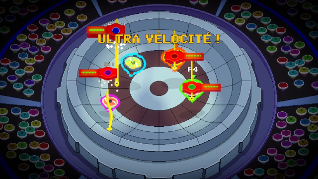

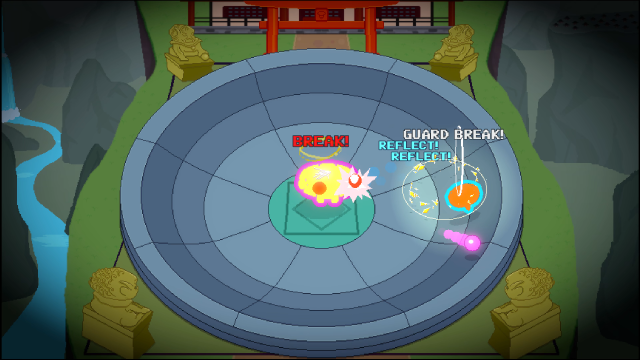

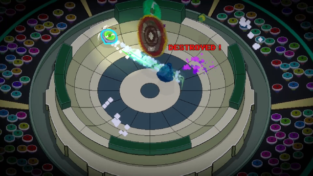

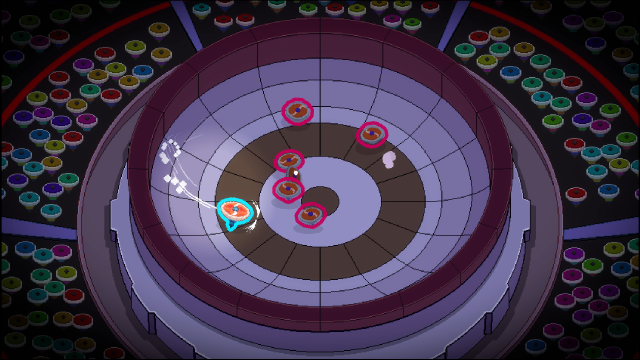

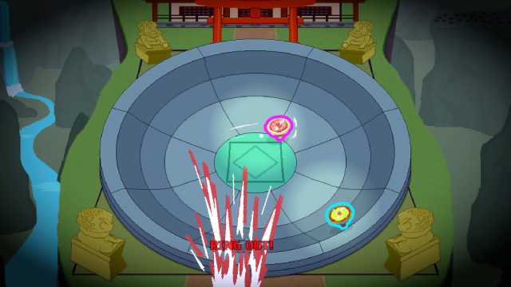

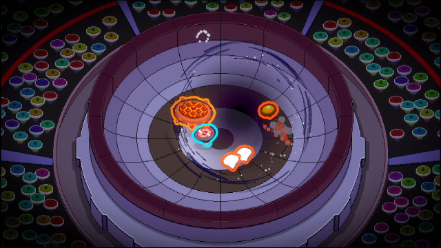

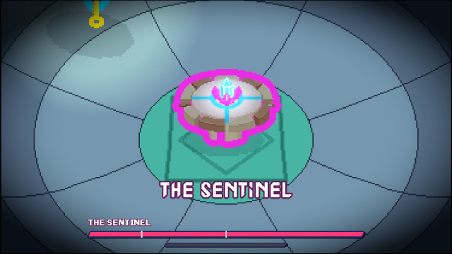

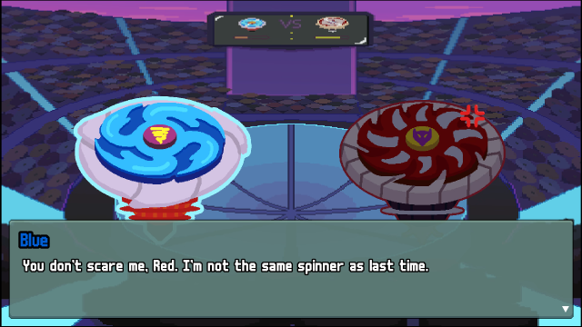

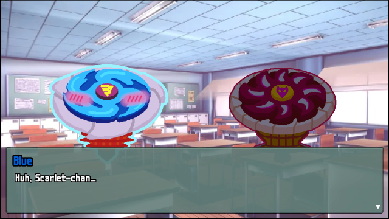

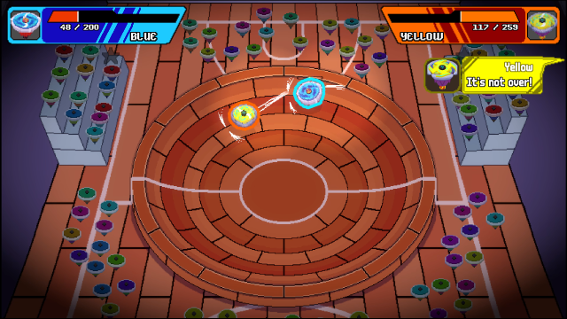

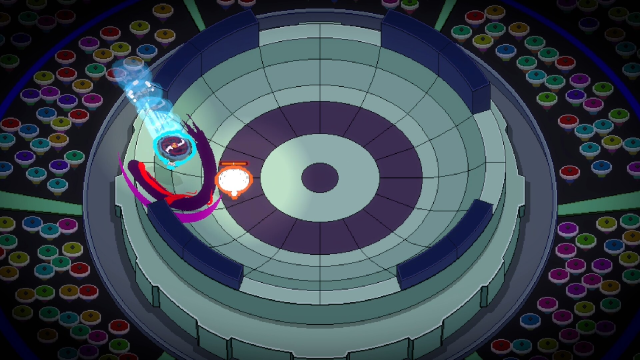

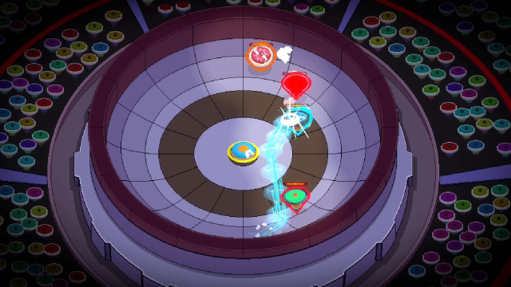

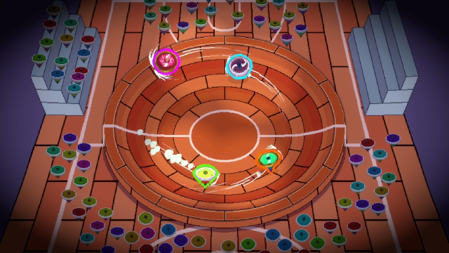

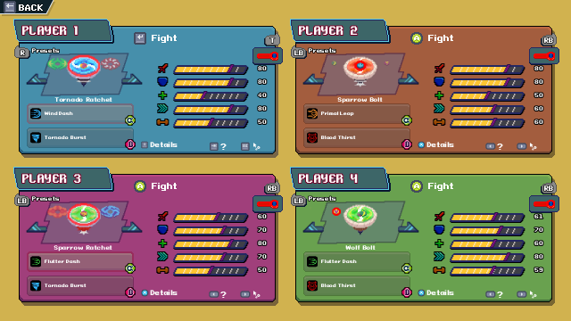

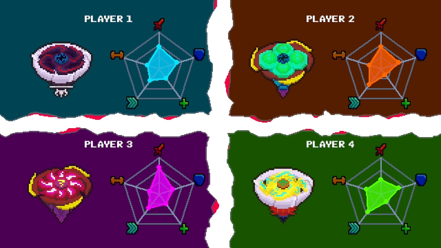

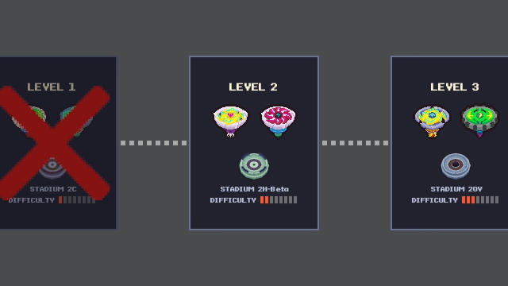
GIF et boucles courtes
Enregistrées en jeu. Chaque boucle existe en GIF (640×360) et en MP4 (1920×1080) ; les boucles à quatre joueurs existent aussi avec le HUD.


Logos et visuels
PNG avec transparence. Merci de ne pas recolorer ni recadrer le logo.


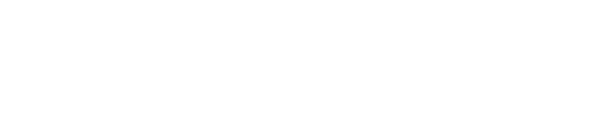


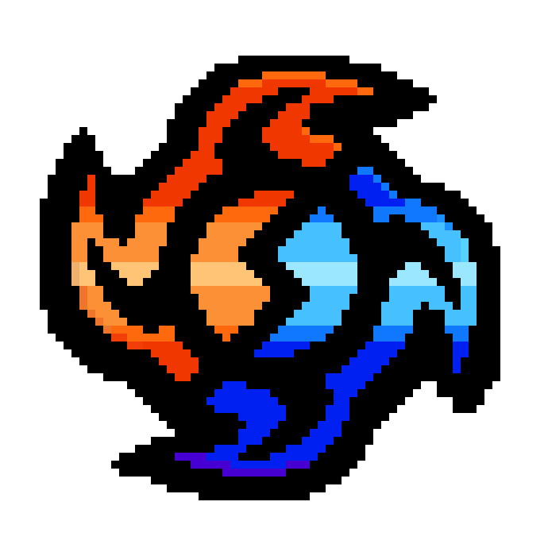

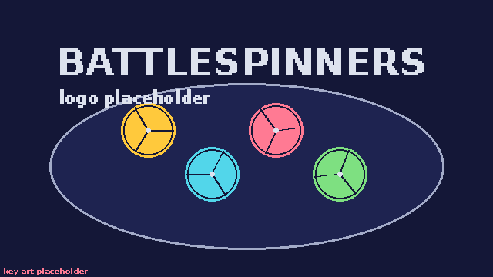

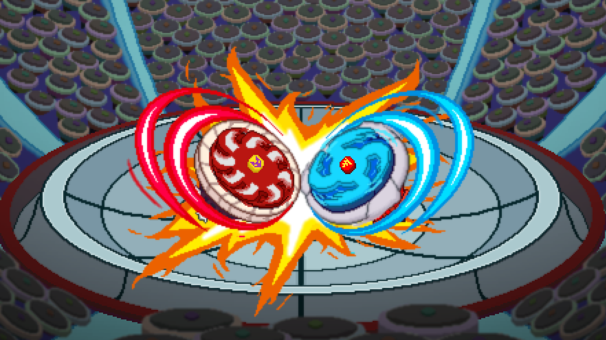


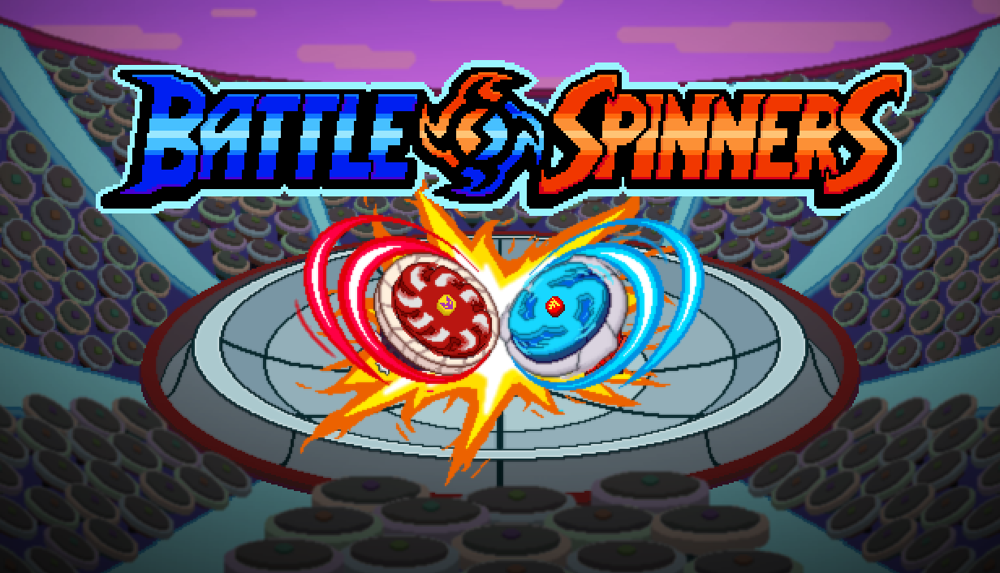


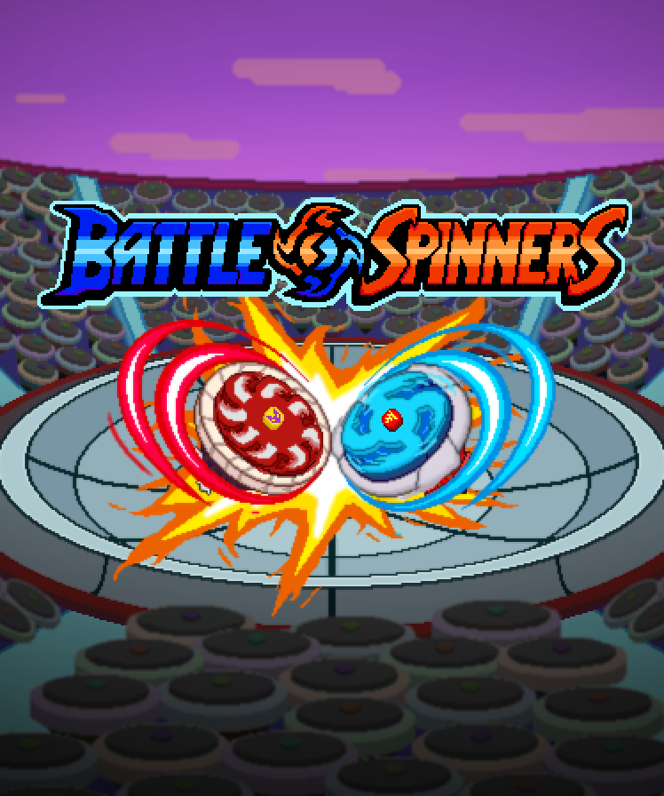

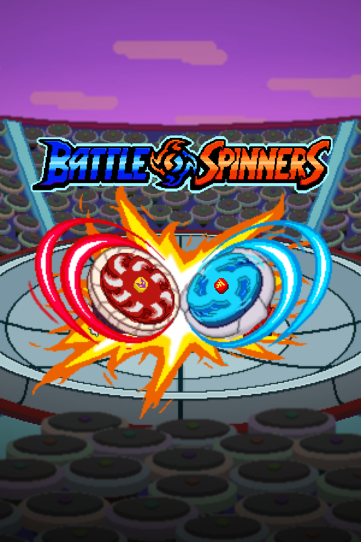
Fiche technique
- Développeur et éditeur
- Nowa Letyrex, développeur solo
- Basé à
- Toulouse, France
- Date de sortie
- Mars 2027
- Démo gratuite
- Sur Steam à partir du 11 novembre 2026, avec le mode histoire et Remote Play Together
- Plateformes
- Windows, sur Steam
- Prix
- À annoncer
- Joueurs
- 1 à 4 sur le même écran ; en ligne via Steam Remote Play Together
- Langues
- anglais, français, espagnol (démo : anglais et français)
- Moteur
- Godot
- Usage de l'IA
- Aucune IA générative dans le contenu du jeu : graphismes, animations, musique, effets sonores, textes et traductions sont entièrement réalisés par des humains. Des assistants de programmation à base d'IA ont servi pour une partie du code.
- Steam
- store.steampowered.com/app/4324770
- Site
- battlespinnersgame.com
- Réseaux
- Bluesky, X, Instagram, YouTube, Discord
Le développeur
Je suis Nowa Letyrex et je développe BattleSpinners en solo, à Toulouse, depuis novembre 2025. Je cherche à proposer un jeu facile à prendre en main, même pour les non-joueurs, mais assez profond pour ceux qui voudront passer des dizaines d'heures à le maîtriser. Et je veux un jeu qui laisse libre cours à la créativité des joueurs à travers sa personnalisation et ses mécaniques en combat.
Contact et conditions
Presse et créateurs : press@battlespinnersgame.com. Réponse sous 48 heures.
Jouer au jeu : la démo gratuite est sur Steam à partir du 11 novembre 2026 à 10 h, heure de Paris. Des clés Steam donnant accès à la démo en avance sont disponibles sur demande pour les articles et les streams. Précisez votre média ou votre chaîne dans votre e-mail.
Streams et vidéos : vous pouvez streamer BattleSpinners et monétiser vos vidéos sans demander d'autorisation.
Musique : la bande-son du jeu et la musique du trailer peuvent être utilisées en stream et dans des vidéos monétisées. Si une vidéo reçoit malgré tout une réclamation de droits d'auteur, écrivez à press@battlespinnersgame.com et je m'en occupe.
Embargo : les news sur le jeu, le trailer et tout le contenu de cette page peuvent être publiés dès maintenant. Les prises en main de la démo, y compris en accès anticipé (previews, impressions, vos propres vidéos de gameplay et streams) peuvent paraître à partir du 11 novembre 2026 à 10 h, heure de Paris (9 h UTC), à la sortie de la démo gratuite sur Steam.
Contenus : toutes les images, vidéos et textes de cette page peuvent être utilisés pour des articles et des vidéos consacrés à BattleSpinners.
Page mise à jour le .